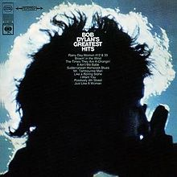

Bob Dylan's Greatest Hits

Released: March 27, 1967
Length: 40:21
Producer(s): John H. Hammond, Tom Wilson, Bob Johnston
Label: Columbia
Side 1
Rainy Day Women #12 & 35
(appeared on
Blonde on Blonde
)
Blowin' in the Wind
(appeared on
The Freewheelin' Bob Dylan
)
The Times They Are A-Changin'
(appeared on
The Times They Are A-Changin'
)
It Ain't Me Babe
(appeared on
Another Side of Bob Dylan
)
Like a Rolling Stone
(appeared on
Highway 61 Revisited
)
Side 2
Mr. Tambourine Man
(appeared on
Bringing It All Back Home
)
Subterranean Homesick Blues
(appeared on
Bringing It All Back Home
)
I Want You
(appeared on
Blonde on Blonde
)
Positively 4th Street
Just Like a Woman
(appeared on
Blonde on Blonde
)
Home